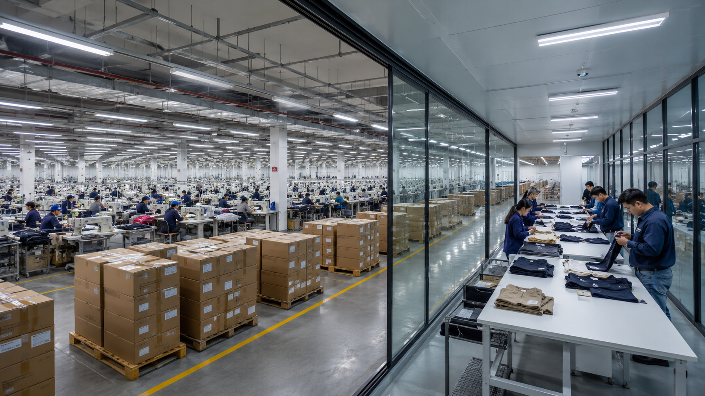

QualBridge provides independent garment inspection services for international buyers, importers and apparel brands to help maintain quality standards and reduce production risks.

QualBridge is an independent garment inspection company based in Bangladesh, providing professional quality inspection services for international buyers, importers and apparel brands.
Our focus is to help businesses maintain product quality through accurate inspection, transparent reporting and reliable quality support.
To provide professional and reliable inspection solutions that help buyers ensure product quality, reduce risks and build confidence in their supply chain.
To become a trusted global apparel quality partner by delivering independent inspection services with professionalism, transparency and international standards.
We are committed to integrity, transparency, professionalism and reliability, ensuring every inspection is conducted with accuracy, consistency and international quality standards.
QualBridge provides independent inspection solutions to help buyers maintain quality standards throughout the apparel production process.
Comprehensive inspection after production completion to verify product quality, workmanship and buyer requirements.
Inspection during manufacturing to identify quality issues early and reduce production risks.
Monitoring production lines to ensure quality consistency during the manufacturing process.
Reliable quality support through inspection coordination, reporting and communication.
Professional review of samples to assess quality, workmanship and compliance before bulk production.
Evaluation of factory capability, production practices and quality management systems.
QualBridge provides professional inspection support across a wide range of apparel manufacturing sectors.
Professional inspection for all woven apparel products.
Reliable quality control for knitwear production.
Inspection services for knitted sweater manufacturing.
Quality inspection for denim garments and jeans.
Inspection solutions for activewear and sports apparel.
Quality assurance for industrial and safety garments.
Inspection support for children's apparel collections.
Inspection for jackets, coats and seasonal outerwear.
We deliver independent inspection services with professionalism, transparency and internationally recognized quality practices.
Unbiased inspection services that help buyers make confident quality decisions.
Inspection based on internationally accepted AQL standards and professional quality procedures.
Detailed inspection reports with clear findings, images and practical recommendations.
Quick communication and dependable quality support throughout every inspection project.
Our structured inspection process ensures consistent quality control from inspection request to final reporting.
Buyers submit inspection requirements, order details and factory information.
Inspection schedule and production status are confirmed with the factory.
Professional inspectors perform inspections based on buyer requirements and AQL standards.
Product quality, measurements, workmanship and packaging are carefully evaluated.
A detailed inspection report with findings and photographs is prepared for the buyer.
Buyers review the report and make shipment approval or corrective action decisions.
QualBridge provides independent garment inspection and quality assurance services across Bangladesh's leading apparel manufacturing regions.
Supporting garment factories with professional inspection and quality control services.
Inspection solutions for knit, woven and sweater manufacturing facilities.
Reliable quality inspection for export-oriented apparel production.
Independent inspection services for major industrial garment zones.
Quality assurance support for apparel exporters and manufacturers.
Professional inspection services for emerging garment manufacturing areas.
Find answers to the most common questions about our garment inspection and quality assurance services.
QualBridge provides Final Random Inspection (FRI), During Production Inspection (DPI), Inline Inspection, Factory Audit, Sample Evaluation and Buyer QC Support.
We provide independent inspection services across major garment manufacturing regions throughout Bangladesh.
Yes. Inspections are performed according to buyer requirements and internationally recognized AQL standards.
Buyers can request an inspection through our contact form, email, phone or WhatsApp.
Ready to discuss your garment inspection requirements? Contact us today for professional quality support.
ziaurrahman744@gmail.com
+8801825222414
Dhaka, Bangladesh
Share your inspection requirements and our quality team will contact you with professional support.